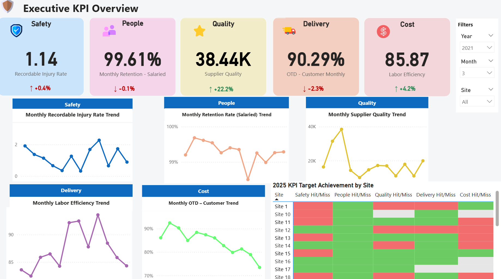
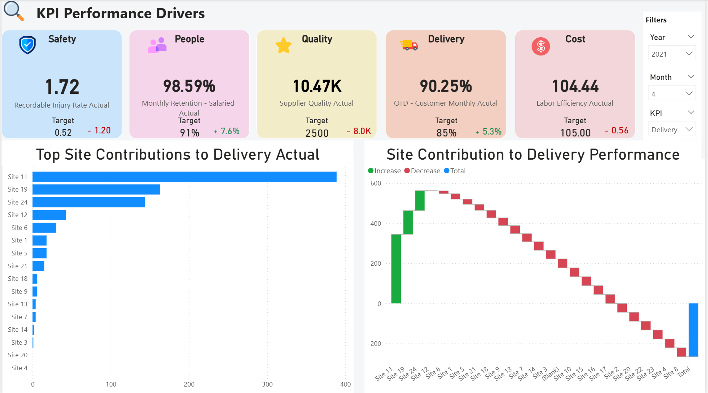
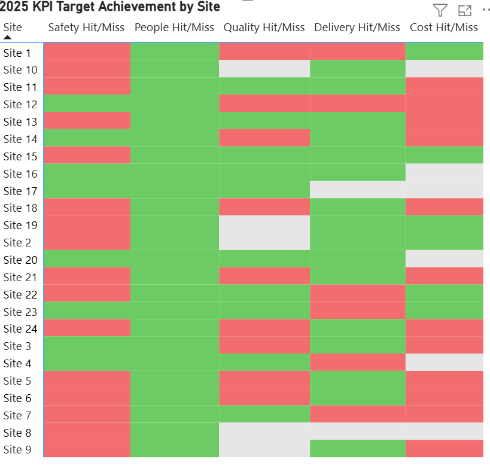
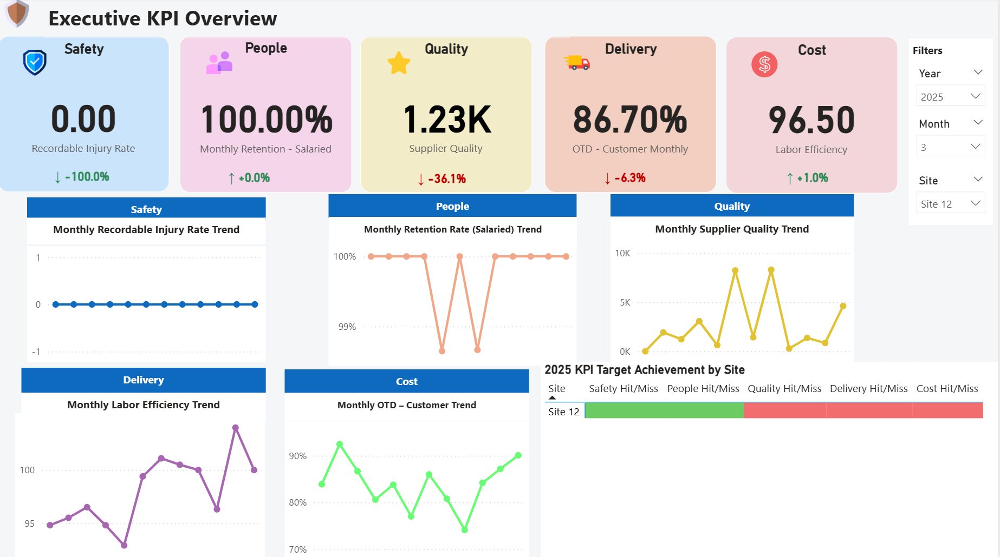
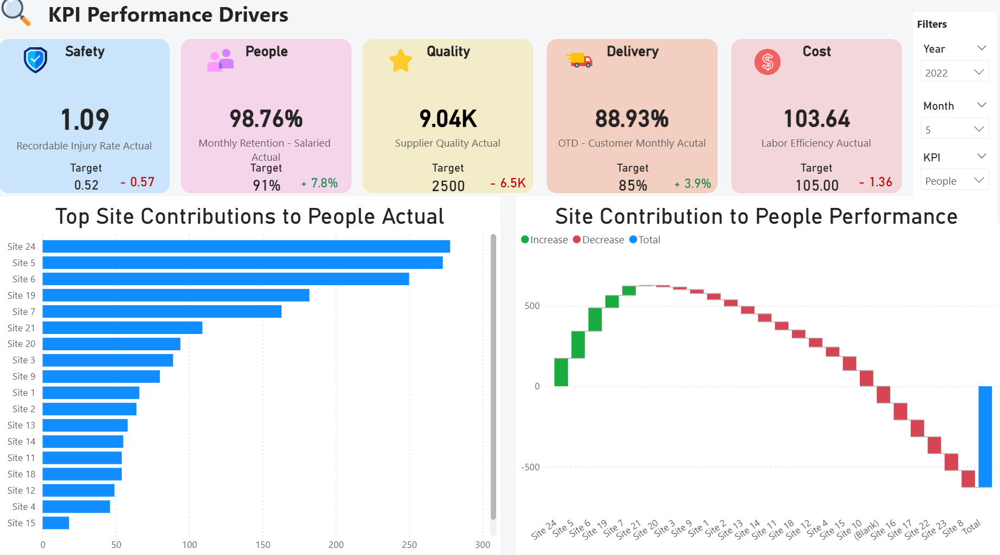

1) Introduction
This project delivers an executive-facing KPI dashboard built in Power BI to help leadership monitor multi-site performance across five operational areas: Safety, People, Quality, Delivery, and Cost.
The objective is to transform KPI data into a decision-support product that makes it easier to identify underperforming areas, compare site-level contributions, and track monthly changes against operational targets.
- Executive KPI scorecards with target comparison
- Monthly trend charts for major KPI categories
- Site-level target achievement heatmap
- Driver analysis through ranked contributions
- Waterfall visualization for site performance impact
- Interactive filtering by year, month, site, and KPI
2) Dashboard Design & Analytical Focus
2.1 Executive KPI Overview
- High-level KPI cards summarize the current period’s performance
- Small trend charts provide a fast monthly view of each operational domain
- Target achievement heatmap highlights which sites are on or off target
- Designed for quick executive scanning and exception spotting
2.2 KPI Performance Drivers
- Users can select a KPI and examine which sites contribute most positively or negatively
- Bar ranking surfaces top contributors immediately
- Waterfall analysis shows how individual sites drive total performance
- Supports operational discussions around root causes and intervention priorities
3) Evidence Gallery (Click to zoom)
The screenshots below document the dashboard structure, interactive filtering, and the main analytical views used to support executive KPI review.

Main dashboard page summarizing performance across Safety, People, Quality, Delivery, and Cost.

Driver page showing ranked site contributions and waterfall analysis for a selected KPI.

Heatmap view for quickly identifying which sites meet or miss KPI targets across categories.

Demonstrates filtering by year, month, and site to dynamically update executive KPI summaries.

Shows KPI-specific filtering to explore performance drivers and compare site-level impact.
4) Results & Outcomes
- Centralized KPI monitoring across major operational categories
- Executive-friendly reporting layout with quick visibility into trends and target gaps
- Site-level comparison through heatmaps, rankings, and waterfall analysis
- Interactive exploration using filters for year, month, site, and KPI
- Decision-support value by surfacing performance drivers and priority problem areas
This project demonstrates how business KPI reporting can be turned into an interactive decision-support dashboard that combines metric visibility, comparative analysis, and executive usability.